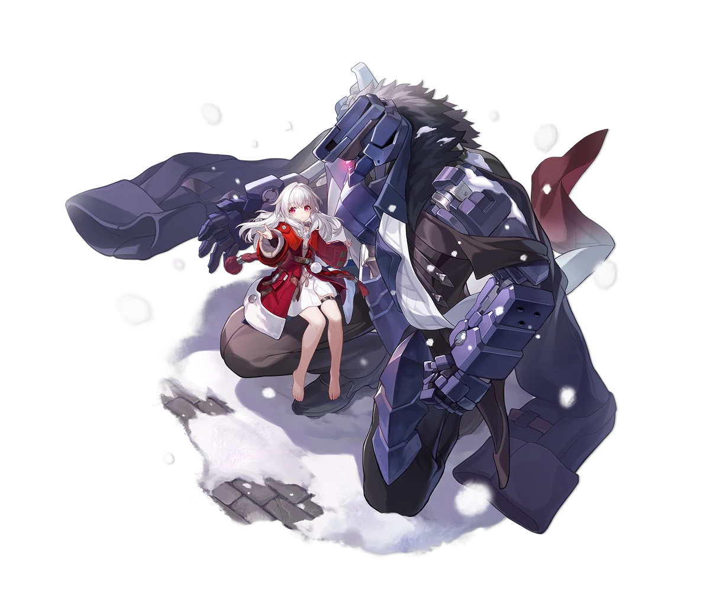

Descripcion del personaje
Clara es sin duda uno de los personajes más interesantes de Honkai Star Rail ya que tiene una mecánica muy particular relacionada con el poderoso robot que la protege: Svarog.
Y es que la mecánica de este personaje consiste en provocar a sus enemigos para que estos decidan golpearle (es un personaje de la Vía de la Destrucción con un poco de complejo de Conservación) para que así Svarog se mosquee con ellos y les pegue una buena tunda como represalia.
Introduccion al personaje
Es una joven huérfana que vive en las profundidades subterráneas del planeta Jarilo-VI, una región hostil y peligrosa del universo del juego.
Clara no está sola: siempre está acompañada por Svarog, un poderoso robot que actúa como su protector. Svarog fue un autómata programado para cumplir con un objetivo lógico y frío, pero tras conocer a Clara, desarrolló una relación protectora y casi paternal con ella. Esta dinámica crea un contraste interesante, ya que Clara es tierna, ingenua y empática, mientras que Svarog es pragmático y rígido en sus decisiones.

Calidad del personaje

VIA del personaje
Destruccion
Estadisticas del personaje
- PV: 1319
- ATQ: 737
- DEF: 485
- VEL: 90
- Provocacion: Muy alta(incalculable)